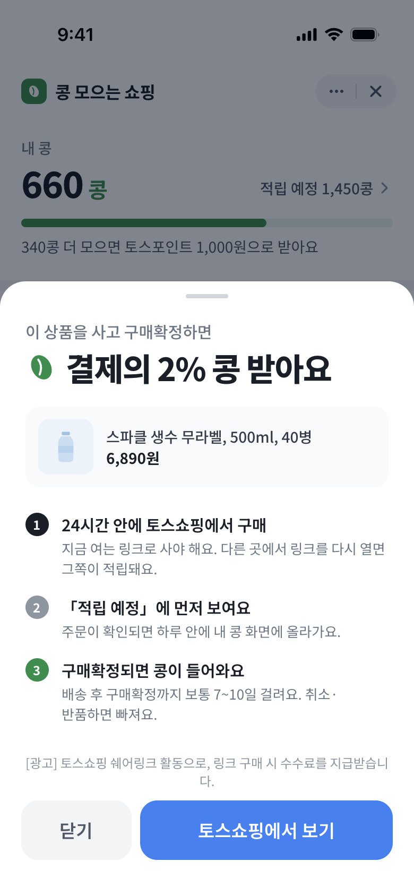
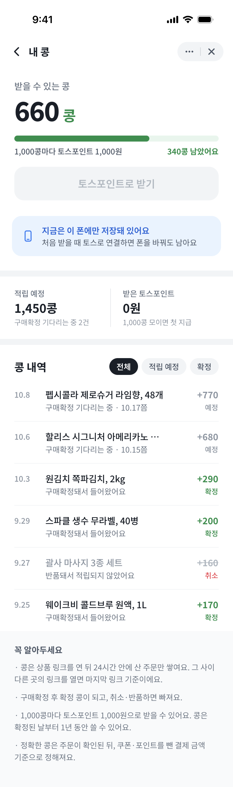
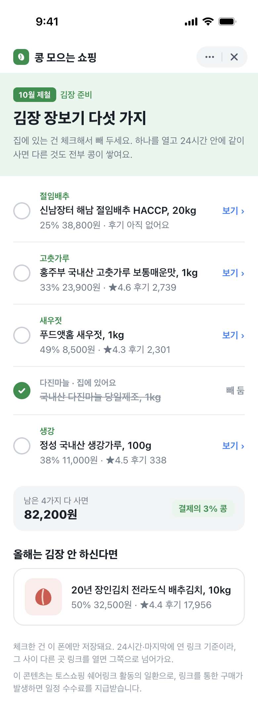
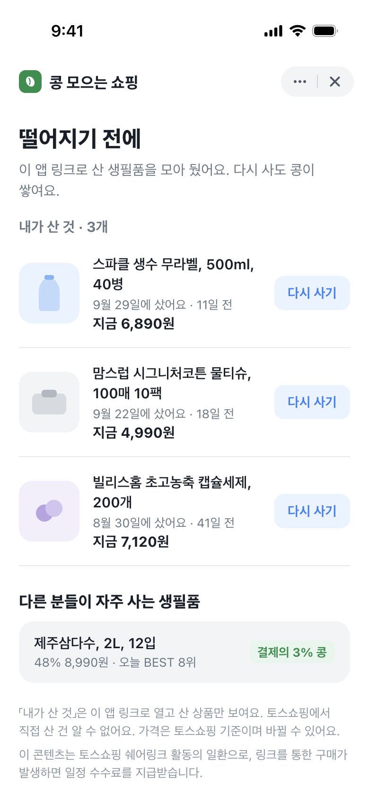
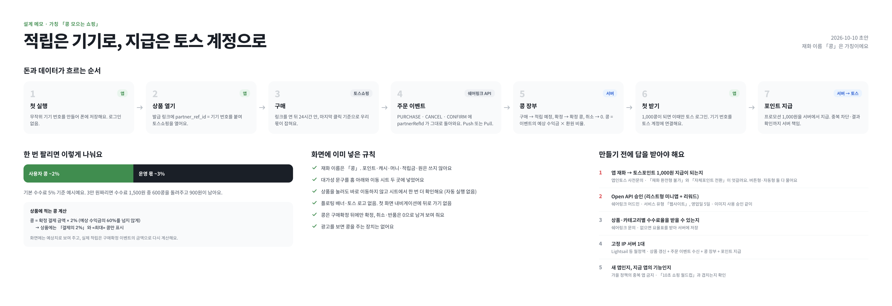

콩 모으는 쇼핑
운영자가 고른 토스쇼핑 추천 상품을 이 미니앱의 링크로 열어 사면, 구매확정 뒤 앱 안에 「콩」이 쌓이는 구매 리워드 서비스예요.
이 콘텐츠는 토스쇼핑 쉐어링크 활동의 일환으로, 링크를 통한 구매가 발생하면 일정 수수료를 지급받습니다.
어떻게 쓰나요
- 고르기 — 운영자가 매일 토스쇼핑 인기 상품 중 20개 안팎을 골라 「오늘 장보기」 같은 주제별 추천과 계절 체크리스트(예: 김장 준비)로 보여줘요.
- 토스쇼핑에서 사기 — 상품을 누르면 이동 전 안내 화면에서 대가성 문구를 먼저 보여주고, 사용자가 버튼을 직접 눌렀을 때만 토스쇼핑 상품 화면이 열려요. 결제·배송·교환·환불은 모두 토스쇼핑에서 해요.
- 구매확정되면 콩 — 주문이 확인되면 「적립 예정」으로 보이고, 구매확정되면 콩으로 확정돼요. 취소·반품된 주문은 적립하지 않아요.
이런 서비스는 아니에요
- 상품 검색, 전체 카테고리 둘러보기, 다른 쇼핑몰과의 가격 비교를 제공하지 않아요.
- 링크를 자동으로 열거나, 화면을 가리는 플로팅 배너를 쓰지 않아요.
- 광고를 보면 콩을 주는 장치는 없어요.
콩 적립 원칙
기준 — 상품 화면에는 「결제의 2% 콩」 비율과, 판매가로 계산한 «최대» 콩만 안내해요(쿠폰·포인트를 쓰면 줄어든다고 함께 적어요). 정확한 콩은 주문이 확인된 뒤, 쿠폰·포인트를 뺀 실제 결제 금액을 기준으로 정해져요.
확정 — 구매확정 이벤트를 받은 뒤에만 확정 콩이 돼요.
받기 — 콩이 일정 단위로 모이면 앱인토스 프로모션(토스포인트)으로 받을 수 있도록 준비 중이에요. 지급 조건과 한도는 프로모션 승인 내용에 따라 앱 안에서 미리 안내해요.
식별 — 링크에는 앱이 만든 무작위 식별자만 붙여요. 이름·전화번호 같은 개인정보는 넣지 않아요.
화면 미리보기




흐름과 정책
